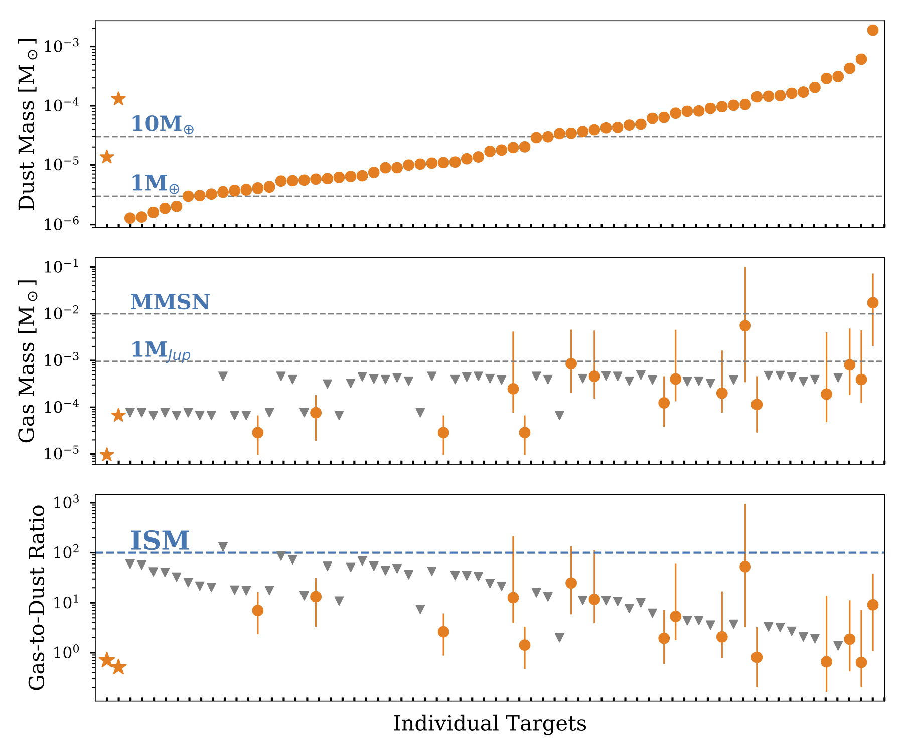

Disk Mass Budget
The mass of a protoplanetary disk limits the formation and future evolution of any planet, and is thus one of the most important input quantities for planet formation models. ALMA has allowed us to take snapshot observations for the millimeter brightness of hundreds to thousands of disks in the young (1-10 Myr) nearby star-forming regions in the past few years. These observations enable a statistic understanding of the mass budget in disks.
Our Chamaeleon I survey is one of the many early experienments. We have conducted the 0.89 mm continuum and CO gas observations (PI. Pascucci) for 93 protoplanetary disks in the nearby and young (2-3 Myr) Chamaeleon I star-forming region, with key results: 1) Disk dust masses are well correlated with the stellar masses with a steeper-than-linear scaling relation; Pascucci, I., Testi, L., Herczeg, G. J, Long, F. et al. ApJ 2016 2) The stellar-disk mass correlation bears with considerable scatters, which is in part due to stellar multiplicity; Long, F., Herczeg, G. J,Pascucci, I. et al. ApJ 2018 3) Assuming typical ISM CO-to-H2 abundance ratio, resulting gas masses are implausibly low, implying an early giant planet formation process. Alternatively, the gas masses may be severely underestimated if CO-to-H2 abundance ratio is lower than the ISM value, which may be caused by C and/or O depletion and lock-up, or if CO freeze-out is underestimated Long, F., Herczeg, G. J,Pascucci, I. et al. ApJ 2017 Disk Evolution Towards the End of Disk Phase
ALMA disk demographic studies have revealed insightful evolution of disk mass to guide planet formation models. However, most established trends are anchored by the old Upper Sco disks (5-10 Myr), and disentangling the effects of age, environment, and initial conditions remains challenging. A recent Gaia study on Corona Australis (CrA) has revealed two disk populations at distinct evolutionary stages: one clustered at the dense cloud center of 2 Myr vs. one dispersed sample of 12-15 Myr, making it an excellent laboratory to study disk evolution with mininal environmental effects. We proposed with ALMA an unbiased 0.9mm continuum emission survey for 111 disks in CrA (complete down to M6) with a dust mass sensitivity of 0.1 Earth mass. ALMA-2022.1.01132.S (PI. Feng Long) - stay tuned for new dataDemographics of Gas Disk Sizes
The disk extension of the gas component provides crucial information on disk formation and subsequent evolution. Their comparison to the dust disk radii (Rgas/Rdust) also reveals important details of the differential evolution between dust grains and gas particles. In a recent work (Long, F., Andrews, S., Rosotti, G. et al. ApJ 2022), we analyzed mm continuum and CO emission line sizes for 44 disks, and found that:
1) CO disk sizes can span from 50 to 1000 AU, and show no clear trend with system age. These measurements could be explained by either viscous evolution (with different initial condition or viscosity) or MHD disk wind. 2) CO emission is usually more extended than the continuum emission by ~3. A number of disks have high size ratios that present a clear sign of radial drift. 3) GO Tau disk is a monster, which shares a lot of commonalities with DM Tau, and might serve as another case with substantial turbulence.